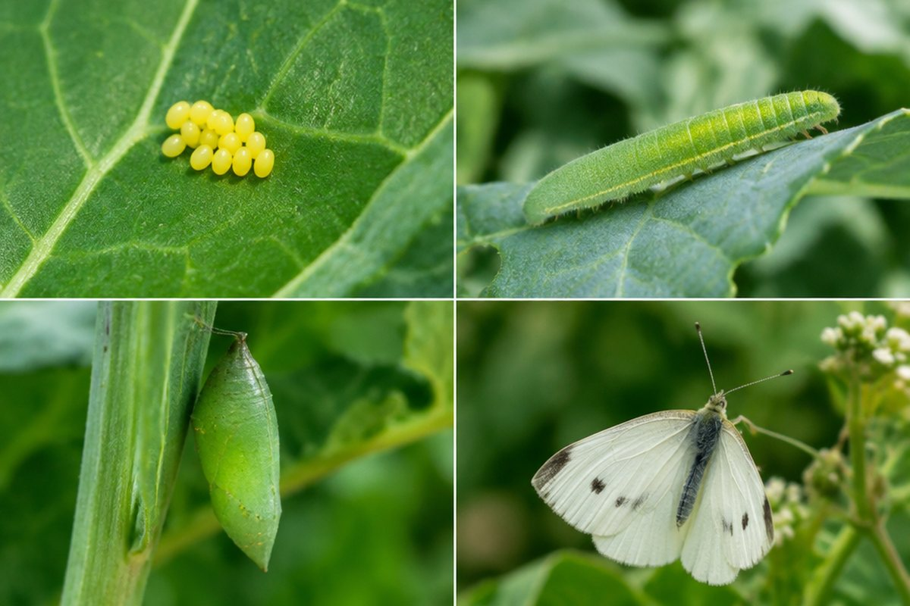

전체 단원 › 3~4학년 › 과학 › 동물의 한살이
동물은 어떻게 태어나고 자랄까?

봄에 배추밭을 날던 흰나비는 어디에서 왔을까요? 처음부터 나비였을까요?
한살이란?
동물이 알이나 새끼로 태어나서 자라 어른이 되고, 다시 알이나 새끼를 낳는 과정을 '한살이'라고 해요.
동물마다 한살이 모습이 달라요. 어떤 동물은 자라면서 생김새가 크게 바뀌고, 어떤 동물은 모습이 거의 그대로예요.
배추흰나비의 한살이
배추흰나비는 '알 → 애벌레 → 번데기 → 어른벌레(나비)' 순서로 자라요. 알은 주로 배추나 케일 잎 뒷면에 낳아요.
애벌레는 잎을 먹으며 허물을 벗고 자라요. 번데기 때는 아무것도 먹지 않고 움직이지 않지만, 그 안에서 어른벌레로 변하고 있어요.
배추흰나비 애벌레는 배추 잎을 갉아 먹어 잎에 구멍을 내요.
완전 탈바꿈과 불완전 탈바꿈
배추흰나비, 나비, 벌, 파리, 무당벌레처럼 번데기 단계를 거치는 것을 '완전 탈바꿈'이라고 해요.
잠자리, 매미, 메뚜기, 사마귀는 '알 → 애벌레 → 어른벌레'로 자라고 번데기 단계가 없어요. 이것을 '불완전 탈바꿈'이라고 해요.
잠자리 애벌레(학배기)는 물속에서 살다가 물 밖으로 나와 허물을 벗고 잠자리가 돼요.
알을 낳는 동물, 새끼를 낳는 동물
닭, 개구리, 거북, 물고기처럼 알을 낳는 동물이 있어요. 닭의 알은 약 21일 동안 품으면 병아리가 깨어나요.
개, 고양이, 소, 사람처럼 새끼를 낳는 동물은 어미 배 속에서 어느 정도 자란 뒤 태어나고, 어릴 때 어미젖을 먹고 자라요.
개구리는 알 → 올챙이 → 개구리 순서로 자라면서 아가미 대신 폐로 숨 쉬게 돼요.
핵심 낱말
- 한살이
- 동물이 태어나 자라서 자손을 남기는 과정
- 애벌레
- 알에서 깨어난 어린 곤충
- 번데기
- 애벌레가 어른벌레가 되기 전 움직이지 않는 단계
- 완전 탈바꿈
- 알-애벌레-번데기-어른벌레로 자라는 것
- 불완전 탈바꿈
- 번데기 단계 없이 알-애벌레-어른벌레로 자라는 것
한 줄 정리
- 한살이는 동물이 태어나 자라서 자손을 남기는 과정이에요.
- 배추흰나비는 알-애벌레-번데기-어른벌레로 자라요(완전 탈바꿈).
- 잠자리처럼 번데기 없이 자라는 것은 불완전 탈바꿈이에요.